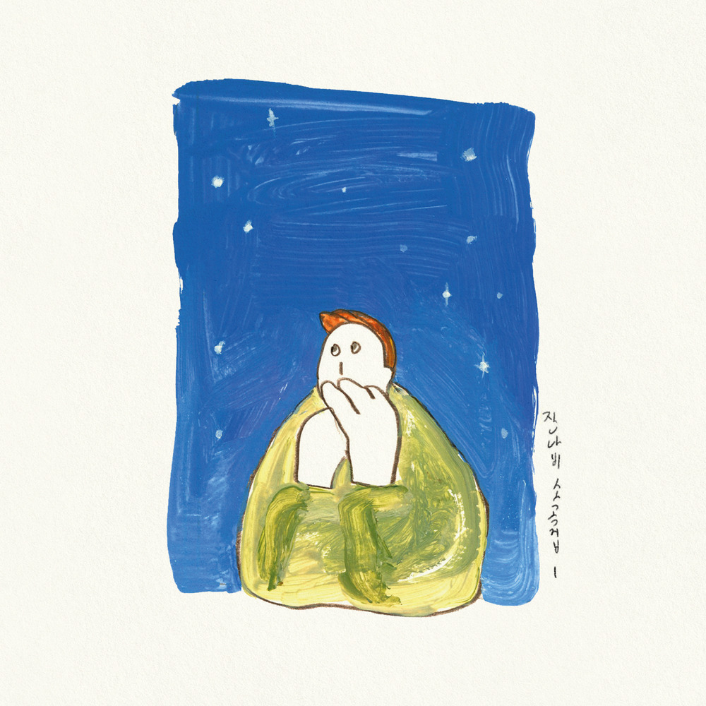

안녕하세요 라보엠입니다.
날씨가 참 좋은 가을밤입니다. 오늘은 이런 가을밤에 참 잘 어울리는 곡이죠, 잔나비의 가을밤에 든 생각은 2020년 11월 6일에 발매된 EP 잔나비 소곡집 I의 타이틀 곡입니다. 이 노래는 가을밤의 아련한 감성과 그리움을 담아낸 곡으로, 잔나비 특유의 레트로하고 빈티지한 감성이 잘 드러나 있습니다.

잔나비 가을밤에 든 생각 MV
잔나비 [JANNABI] - '가을밤에 든 생각' M/V
어느 가을밤에 든 생각을 노래에 담아봤어요.
‘운 좋게 얻은 이 방에서는 하늘에 별도 잘 보여서요
밤이면 두 손 모아 그리워할게 많아서 이 밤 외롭진 않겠네‘
끝까지 고민하다 놓아준 가사 한 소절이에요. 여전히 아쉬운 마음이 들어서 여기에라도 써봤어요.
-잔나비 최정훈
[잔나비 소곡집 Ⅰ]
✨ JANNABI - 'A thought on an autumn night' M/V 2020. 11. 6. PM6 Release
가을밤에 든 생각 노래 분위기는 잔잔한 스트링 선율과 섬세한 보컬이 어우러져 아련한 감성을 자아냅니다. 가사에는 가을밤 하늘의 별을 바라보며 떠오르는 추억과 그리움이 담겨 있어, 듣는 이로 하여금 과거의 한 장면을 떠올리게 합니다. 잔나비의 최정훈과 김도형이 작사와 작곡에 참여했으며, 인디 록과 포크송 장르의 특징을 보입니다. 뮤직비디오 역시 노래의 감성을 잘 살려 가을의 정취를 시각적으로 표현했습니다.
잔나비 가을밤에 든 생각 가사
머나먼 별빛 저 별에서도
노랠 부르는 사랑 살겠지
밤이면 오손도손 그리운 것들 모아서
노랠 지어 부르겠지
새까만 밤하늘을 수놓은 별빛마저
불어오는 바람 따라가고
보고픈 그대 생각 짙어져 가는
시월의 아름다운 이 밤에
부르다 보면 어제가 올까
그립던 날이 참 많았는데
저 멀리 반짝이다 아련히 멀어져 가는
너는 작은 별 같아
Farewell Farewell
멀어져 가는
Farewell ooh
새까만 밤하늘을 수놓은 별빛마저
불어오는 바람 따라 가고
보고픈 그대 생각 짙어져 가는
시월의 아름다운 이 밤에
수많은 바람 불어온대도
날려 보내진 않을래
잊혀질까 두려워 곁을 맴도는
시월의 아름다운 이 밤을 기억해 주세요
Farewell Farewell
이 곡은 발매 이후 많은 사랑을 받아 다양한 음악 프로그램에서 라이브로 선보여졌으며, 2023년에는 서울세계불꽃축제에서도 사용되었습니다. 가을밤에 든 생각은 가을의 감성을 담은 노래를 찾는 분들에게 추천드립니다. 선선한 가을밤, 창밖의 별을 바라보며 이 노래를 들으면 특별한 감성에 젖어들어보시길 바랍니다.